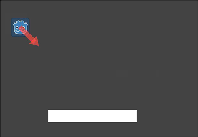
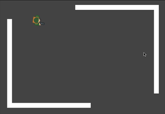
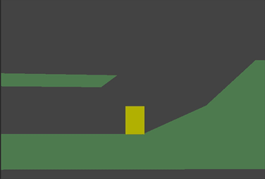

Sử dụng CharacterBody2D/3D
Giới thiệu
Godot cung cấp nhiều collision object để hỗ trợ cả phát hiện va chạm lẫn phản hồi va chạm. Việc chọn dùng loại nào cho dự án có thể gây bối rối. Bạn có thể tránh được vấn đề và đơn giản hóa việc phát triển nếu hiểu cách mỗi loại hoạt động cũng như ưu nhược điểm của chúng. Trong bài hướng dẫn này, chúng ta sẽ xem xét node CharacterBody2D và đưa ra một số ví dụ về cách sử dụng nó.
Ghi chú
Dù tài liệu này dùng CharacterBody2D trong các ví dụ, các khái niệm tương tự cũng áp dụng cho 3D.
Character body là gì?
CharacterBody2D dùng để hiện thực các body được điều khiển bằng code. Character body phát hiện va chạm với các body khác khi di chuyển, nhưng không bị ảnh hưởng bởi các thuộc tính vật lý của engine như trọng lực hay ma sát. Điều này nghĩa là bạn phải viết một ít code để tạo hành vi cho chúng, nhưng đồng thời bạn cũng kiểm soát chính xác hơn cách chúng di chuyển và phản ứng.
Dù có tên là CharacterBody2D, nó cũng có thể dùng cho các đối tượng vật lý khác cần logic di chuyển thủ công chính xác và thông tin va chạm chi tiết, như platform di động hoặc các loại đạn phức tạp.
Ghi chú
Tài liệu này giả định bạn đã quen với các loại physics body của Godot. Vui lòng đọc Giới thiệu về vật lý trước để có cái nhìn tổng quan về các tùy chọn vật lý.
Mẹo
Một CharacterBody2D có thể chịu ảnh hưởng của trọng lực và các lực khác, nhưng bạn phải tự tính chuyển động trong code. Engine vật lý sẽ không di chuyển một CharacterBody2D.
Chuyển động và va chạm
Khi di chuyển một CharacterBody2D, bạn không nên đặt trực tiếp thuộc tính position của nó. Thay vào đó, hãy dùng phương thức move_and_collide() hoặc move_and_slide(). Các phương thức này di chuyển body theo một vector cho trước và phát hiện va chạm.
Cảnh báo
Bạn nên xử lý chuyển động của physics body trong callback _physics_process().
Hai phương thức di chuyển phục vụ các mục đích khác nhau, và ở phần sau của bài hướng dẫn này, bạn sẽ thấy các ví dụ về cách chúng hoạt động.
move_and_collide
Phương thức này nhận một tham số bắt buộc: một Vector2 chỉ chuyển động tương đối của body. Thông thường, đây là vector vận tốc của bạn nhân với bước thời gian của frame (delta). Nếu engine phát hiện va chạm ở bất kỳ đâu dọc theo vector này, body sẽ dừng di chuyển ngay lập tức. Khi đó, phương thức sẽ trả về một đối tượng KinematicCollision2D.
KinematicCollision2D là một đối tượng chứa dữ liệu về va chạm và đối tượng bị va chạm. Dùng dữ liệu này, bạn có thể tính toán phản hồi va chạm của mình.
move_and_collide hữu ích nhất khi bạn chỉ muốn di chuyển body và phát hiện va chạm, nhưng không cần phản hồi va chạm tự động. Ví dụ, nếu bạn cần một viên đạn nảy bật khỏi tường, bạn có thể trực tiếp thay đổi góc của vận tốc khi phát hiện va chạm. Xem ví dụ bên dưới.
move_and_slide
Phương thức move_and_slide() nhằm đơn giản hóa phản hồi va chạm trong trường hợp phổ biến khi bạn muốn một body trượt dọc theo body kia. Nó đặc biệt hữu ích trong game platformer hoặc game góc nhìn từ trên xuống chẳng hạn.
Khi gọi move_and_slide(), hàm này dùng một số thuộc tính của node để tính toán hành vi trượt. Các thuộc tính này có thể tìm thấy trong Inspector hoặc đặt trong code.
velocity- giá trị mặc định:Vector2( 0, 0 )Thuộc tính này biểu diễn vector vận tốc của body tính bằng pixel mỗi giây.
move_and_slide()sẽ tự động thay đổi giá trị này khi va chạm.motion_mode- giá trị mặc định:MOTION_MODE_GROUNDEDThuộc tính này thường được dùng để phân biệt giữa chuyển động cuộn ngang và chuyển động góc nhìn từ trên xuống. Khi dùng giá trị mặc định, bạn có thể dùng các phương thức
is_on_floor(),is_on_wall()vàis_on_ceiling()để phát hiện body đang tiếp xúc với loại bề mặt nào, và body sẽ tương tác với dốc. Khi dùngMOTION_MODE_FLOATING, mọi va chạm đều được coi là "tường".up_direction- giá trị mặc định:Vector2( 0, -1 )Thuộc tính này cho phép bạn định nghĩa những bề mặt nào engine nên coi là sàn. Giá trị của nó cho phép bạn dùng các phương thức
is_on_floor(),is_on_wall()vàis_on_ceiling()để phát hiện body đang tiếp xúc với loại bề mặt nào. Giá trị mặc định nghĩa là mặt trên của các bề mặt nằm ngang sẽ được coi là "mặt đất".floor_stop_on_slope- giá trị mặc định:trueThuộc tính này ngăn body trượt xuống dốc khi đứng yên.
wall_min_slide_angle- giá trị mặc định:0.261799(tính bằng radian, tương đương15độ)Thuộc tính này là góc tối thiểu mà body được phép trượt khi va vào dốc.
floor_max_angle- giá trị mặc định:0.785398(tính bằng radian, tương đương45độ)Thuộc tính này là góc tối đa trước khi một bề mặt không còn được coi là "sàn".
Có nhiều thuộc tính khác có thể dùng để thay đổi hành vi của body trong các tình huống cụ thể. Xem tài liệu CharacterBody2D để biết đầy đủ chi tiết.
Phát hiện va chạm
Khi dùng move_and_collide(), hàm trả về trực tiếp một KinematicCollision2D, và bạn có thể dùng nó trong code.
Khi dùng move_and_slide(), có thể xảy ra nhiều va chạm trong quá trình tính toán phản hồi trượt. Để xử lý các va chạm này, hãy dùng get_slide_collision_count() và get_slide_collision():
# Using move_and_collide.
var collision = move_and_collide(velocity * delta)
if collision:
print("I collided with ", collision.get_collider().name)
# Using move_and_slide.
move_and_slide()
for i in get_slide_collision_count():
var collision = get_slide_collision(i)
print("I collided with ", collision.get_collider().name)
// Using MoveAndCollide.
var collision = MoveAndCollide(Velocity * (float)delta);
if (collision != null)
{
GD.Print("I collided with ", ((Node)collision.GetCollider()).Name);
}
// Using MoveAndSlide.
MoveAndSlide();
for (int i = 0; i < GetSlideCollisionCount(); i++)
{
var collision = GetSlideCollision(i);
GD.Print("I collided with ", ((Node)collision.GetCollider()).Name);
}
Ghi chú
get_slide_collision_count() chỉ đếm số lần body đã va chạm và đổi hướng.
Xem KinematicCollision2D để biết chi tiết về dữ liệu va chạm được trả về.
Nên dùng phương thức di chuyển nào?
Một câu hỏi phổ biến từ người mới dùng Godot là: "Làm sao để quyết định dùng hàm di chuyển nào?" Thường thì câu trả lời là dùng move_and_slide() vì nó có vẻ đơn giản hơn, nhưng điều này không hẳn đúng. Có thể nghĩ rằng move_and_slide() là một trường hợp đặc biệt, còn move_and_collide() tổng quát hơn. Ví dụ, hai đoạn code sau cho ra cùng một phản hồi va chạm:

# using move_and_collide
var collision = move_and_collide(velocity * delta)
if collision:
velocity = velocity.slide(collision.get_normal())
# using move_and_slide
move_and_slide()
// using MoveAndCollide
var collision = MoveAndCollide(Velocity * (float)delta);
if (collision != null)
{
Velocity = Velocity.Slide(collision.GetNormal());
}
// using MoveAndSlide
MoveAndSlide();
Mọi thứ bạn làm với move_and_slide() cũng có thể làm với move_and_collide(), nhưng có thể cần thêm chút code. Tuy nhiên, như chúng ta sẽ thấy trong các ví dụ bên dưới, có những trường hợp move_and_slide() không cho ra phản hồi bạn muốn.
Trong ví dụ trên, move_and_slide() tự động thay đổi biến velocity. Lý do là khi nhân vật va chạm với môi trường, hàm sẽ tính lại tốc độ bên trong để phản ánh sự chậm lại.
Ví dụ, nếu nhân vật rơi xuống sàn, bạn không muốn nó tích lũy tốc độ theo phương thẳng đứng do tác dụng của trọng lực. Thay vào đó, bạn muốn tốc độ thẳng đứng của nó được đặt lại về không.
move_and_slide() cũng có thể tính lại vận tốc của kinematic body nhiều lần trong một vòng lặp, vì để tạo chuyển động mượt, theo mặc định nó di chuyển nhân vật và va chạm tối đa năm lần. Khi kết thúc quá trình, vận tốc mới của nhân vật sẵn sàng để dùng ở frame tiếp theo.
Ví dụ
Để xem các ví dụ này hoạt động, hãy tải dự án mẫu: character_body_2d_starter.zip
Chuyển động và tường
Nếu bạn đã tải dự án mẫu, ví dụ này nằm trong "basic_movement.tscn".
Với ví dụ này, hãy thêm một CharacterBody2D có hai node con: một Sprite2D và một CollisionShape2D. Dùng "icon.svg" của Godot làm texture cho Sprite2D (kéo nó từ FileSystem dock vào thuộc tính Texture của Sprite2D). Trong thuộc tính Shape của CollisionShape2D, chọn "New RectangleShape2D" và chỉnh kích thước hình chữ nhật cho vừa khít với hình ảnh sprite.
Ghi chú
Xem Tổng quan về chuyển động 2D để có các ví dụ hiện thực những kiểu di chuyển 2D.
Gắn một script vào CharacterBody2D và thêm đoạn code sau:
extends CharacterBody2D
var speed = 300
func get_input():
var input_dir = Input.get_vector("ui_left", "ui_right", "ui_up", "ui_down")
velocity = input_dir * speed
func _physics_process(delta):
get_input()
move_and_collide(velocity * delta)
using Godot;
public partial class MyCharacterBody2D : CharacterBody2D
{
private int _speed = 300;
public void GetInput()
{
Vector2 inputDir = Input.GetVector("ui_left", "ui_right", "ui_up", "ui_down");
Velocity = inputDir * _speed;
}
public override void _PhysicsProcess(double delta)
{
GetInput();
MoveAndCollide(Velocity * (float)delta);
}
}
Chạy scene này và bạn sẽ thấy move_and_collide() hoạt động như mong đợi, di chuyển body theo vector vận tốc. Giờ hãy xem điều gì xảy ra khi bạn thêm vài chướng ngại vật. Thêm một StaticBody2D với collision shape hình chữ nhật. Để dễ nhìn thấy, bạn có thể dùng Sprite2D, Polygon2D, hoặc bật "Visible Collision Shapes" từ menu "Debug".
Chạy lại scene và thử di chuyển vào chướng ngại vật. Bạn sẽ thấy CharacterBody2D không thể xuyên qua chướng ngại vật. Tuy nhiên, hãy thử di chuyển vào chướng ngại vật theo một góc nghiêng và bạn sẽ thấy chướng ngại vật hoạt động như keo dính - có cảm giác body bị kẹt lại.
Điều này xảy ra vì không có phản hồi va chạm. move_and_collide() dừng chuyển động của body khi xảy ra va chạm. Chúng ta cần tự viết code cho bất kỳ phản hồi nào mong muốn từ va chạm.
Hãy thử đổi hàm thành move_and_slide() và chạy lại.
move_and_slide() cung cấp phản hồi va chạm mặc định là cho body trượt dọc theo đối tượng va chạm. Điều này hữu ích cho rất nhiều thể loại game, và có thể là tất cả những gì bạn cần để có hành vi mong muốn.
Nảy bật/phản xạ
Nếu bạn không muốn phản hồi va chạm kiểu trượt thì sao? Trong ví dụ này ("bounce_and_collide.tscn" trong dự án mẫu), chúng ta có một nhân vật bắn đạn và muốn đạn nảy bật khỏi tường.
Ví dụ này dùng ba scene. Scene chính chứa Player và Walls. Bullet và Wall là các scene riêng để có thể tạo instance.
Player được điều khiển bằng phím w và s để tiến và lùi. Ngắm bắn dùng con trỏ chuột. Đây là code cho Player, dùng move_and_slide():
extends CharacterBody2D
var Bullet = preload("res://bullet.tscn")
var speed = 200
func get_input():
# Add these actions in Project Settings -> Input Map.
var input_dir = Input.get_axis("backward", "forward")
velocity = transform.x * input_dir * speed
if Input.is_action_just_pressed("shoot"):
shoot()
func shoot():
# "Muzzle" is a Marker2D placed at the barrel of the gun.
var b = Bullet.instantiate()
b.start($Muzzle.global_position, rotation)
get_tree().root.add_child(b)
func _physics_process(delta):
get_input()
var dir = get_global_mouse_position() - global_position
# Don't move if too close to the mouse pointer.
if dir.length() > 5:
rotation = dir.angle()
move_and_slide()
using Godot;
public partial class MyCharacterBody2D : CharacterBody2D
{
private PackedScene _bullet = GD.Load<PackedScene>("res://Bullet.tscn");
private int _speed = 200;
public void GetInput()
{
// Add these actions in Project Settings -> Input Map.
float inputDir = Input.GetAxis("backward", "forward");
Velocity = Transform.X * inputDir * _speed;
if (Input.IsActionPressed("shoot"))
{
Shoot();
}
}
public void Shoot()
{
// "Muzzle" is a Marker2D placed at the barrel of the gun.
var b = (Bullet)_bullet.Instantiate();
b.Start(GetNode<Node2D>("Muzzle").GlobalPosition, Rotation);
GetTree().Root.AddChild(b);
}
public override void _PhysicsProcess(double delta)
{
GetInput();
var dir = GetGlobalMousePosition() - GlobalPosition;
// Don't move if too close to the mouse pointer.
if (dir.Length() > 5)
{
Rotation = dir.Angle();
MoveAndSlide();
}
}
}
Và code cho Bullet:
extends CharacterBody2D
var speed = 750
func start(_position, _direction):
rotation = _direction
position = _position
velocity = Vector2(speed, 0).rotated(rotation)
func _physics_process(delta):
var collision = move_and_collide(velocity * delta)
if collision:
velocity = velocity.bounce(collision.get_normal())
if collision.get_collider().has_method("hit"):
collision.get_collider().hit()
func _on_VisibilityNotifier2D_screen_exited():
# Deletes the bullet when it exits the screen.
queue_free()
using Godot;
public partial class Bullet : CharacterBody2D
{
public int _speed = 750;
public void Start(Vector2 position, float direction)
{
Rotation = direction;
Position = position;
Velocity = new Vector2(speed, 0).Rotated(Rotation);
}
public override void _PhysicsProcess(double delta)
{
var collision = MoveAndCollide(Velocity * (float)delta);
if (collision != null)
{
Velocity = Velocity.Bounce(collision.GetNormal());
if (collision.GetCollider().HasMethod("Hit"))
{
collision.GetCollider().Call("Hit");
}
}
}
private void OnVisibilityNotifier2DScreenExited()
{
// Deletes the bullet when it exits the screen.
QueueFree();
}
}
Hành động diễn ra trong _physics_process(). Sau khi dùng move_and_collide(), nếu xảy ra va chạm, một đối tượng KinematicCollision2D sẽ được trả về (nếu không, giá trị trả về là null).
Nếu có va chạm được trả về, chúng ta dùng normal của va chạm để phản xạ velocity của viên đạn bằng phương thức Vector2.bounce().
Nếu đối tượng bị va chạm (collider) có phương thức hit, chúng ta cũng gọi nó. Trong dự án ví dụ, chúng ta đã thêm hiệu ứng nhấp nháy màu cho Wall để minh họa điều này.

Chuyển động kiểu platformer
Hãy thử thêm một ví dụ phổ biến nữa: game platformer 2D. move_and_slide() rất lý tưởng để nhanh chóng có một bộ điều khiển nhân vật hoạt động được. Nếu bạn đã tải dự án mẫu, bạn có thể tìm thấy ví dụ này trong "platformer.tscn".
Với ví dụ này, chúng ta giả định bạn có một màn chơi gồm một hoặc nhiều đối tượng StaticBody2D. Chúng có thể có hình dạng và kích thước bất kỳ. Trong dự án mẫu, chúng ta dùng Polygon2D để tạo hình dạng các platform.
Đây là code cho body của người chơi:
extends CharacterBody2D
var speed = 300.0
var jump_speed = -400.0
func _physics_process(delta):
# Add the gravity.
velocity += get_gravity() * delta
# Handle Jump.
if Input.is_action_just_pressed("jump") and is_on_floor():
velocity.y = jump_speed
# Get the input direction.
var direction = Input.get_axis("ui_left", "ui_right")
velocity.x = direction * speed
move_and_slide()
using Godot;
public partial class MyCharacterBody2D : CharacterBody2D
{
private float _speed = 100.0f;
private float _jumpSpeed = -400.0f;
// Get the gravity from the project settings so you can sync with rigid body nodes.
public override void _PhysicsProcess(double delta)
{
Vector2 velocity = Velocity;
// Add the gravity.
velocity += GetGravity() * (float)delta;
// Handle jump.
if (Input.IsActionJustPressed("jump") && IsOnFloor())
{
velocity.Y = _jumpSpeed;
}
// Get the input direction.
float direction = Input.GetAxis("ui_left", "ui_right");
velocity.X = direction * _speed;
Velocity = velocity;
MoveAndSlide();
}
}

Trong code này, chúng ta dùng move_and_slide() như đã mô tả ở trên - để di chuyển body theo vector vận tốc của nó, trượt dọc theo mọi bề mặt va chạm như mặt đất hay platform. Chúng ta cũng dùng is_on_floor() để kiểm tra có cho phép nhảy hay không. Nếu không có nó, bạn sẽ có thể "nhảy" giữa không trung; rất tốt nếu bạn làm Flappy Bird, nhưng không hợp với game platformer.
Một nhân vật platformer hoàn chỉnh còn cần nhiều thứ hơn nữa: gia tốc, nhảy đôi, coyote-time, và nhiều thứ khác. Đoạn code trên chỉ là điểm khởi đầu. Bạn có thể dùng nó làm nền tảng để mở rộng thành bất kỳ hành vi di chuyển nào cần cho dự án của mình.